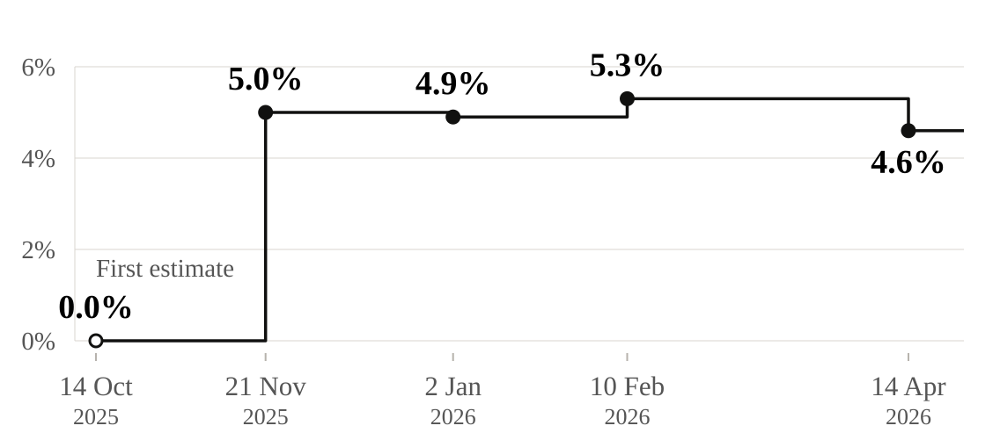

<section class="slide pitch" id="s2" aria-labelledby="h2">
  <h2 id="h2">Decks quote numbers that keep changing.</h2>
  <div class="scene history-scene arrival">
    <div class="win history-window">
      <div class="chrome">
        <span class="traffic" aria-hidden="true"><i></i><i></i><i></i></span>
        <span class="chrome-title">Figure history</span>
      </div>
      <div class="chart-body">
        <strong>Singapore manufacturing growth</strong>
        <p class="meta">Q3 2025 · year on year</p>
        <div role="img" aria-label="The first estimate was 0.0% on 14 October 2025. The next changed readings were 5.0% on 21 November 2025, 4.9% on 2 January 2026, 5.3% on 10 February 2026 and 4.6% on 14 April 2026."></div>
      </div>
    </div>
    <div class="history-stat">
      <strong>57<span> of 60</span></strong>
      <p>tracked figures revised</p>
    </div>
  </div>
  <aside class="notes">The first estimate was zero. Growth for that same quarter reached 5.3 percent before it was revised to 4.6. Fifty-seven of the sixty figures we tracked were revised.</aside>
</section>
